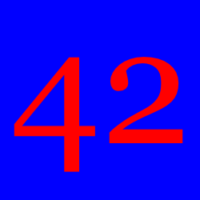
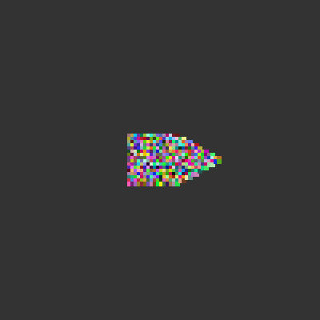

Drawings as image matrices
Images as matrices
While drawing a PNG drawing, you can at any time copy the current graphics in a drawing as a matrix of colored pixels, using the image_as_matrix function.
With the @imagematrix macro, you can create a drawing in the usual way, and then return the result as a matrix of colored pixels.
This code draws a very small PNG image and also uses the image_as_matrix() function to stores the pixels in mat as a 25×25 reinterpret(ColorTypes.ARGB32, ::Matrix{UInt32}):.
using LuxorDrawing(25, 25, :png)origin()background(randomhue()...)sethue("red")fontsize(20)fontface("Georgia")text("42", halign=:center, valign=:middle)mat = image_as_matrix()finish()preview()The next example draws an ampersand and then processes the pixels further in Images.jl.
using Luxor, Colors, Images, ImageFilteringm = @imagematrix begin background("black") sethue("white") fontface("Georgia") fontsize(180) text("&", halign=:center, valign=:middle)end 200 200function convertmatrixtocolors(m) return convert.(Colors.RGBA, m)endimg = convertmatrixtocolors(m)imfilter(img, Kernel.gaussian(10))image_as_matrix returns a array of ARGB32 (AlphaRedGreenBlue) values. Each ARGB value encodes the Red, Green, Blue, and Alpha 8-bit values of a pixel into a single 32 bit integer.
You can display the matrix using, for example, Images.jl.
using Luxor, Images# in LuxorDrawing(250, 250, :png)origin()background(randomhue()...)sethue("red")fontsize(200)fontface("Georgia")text("42", halign=:center, valign=:middle)mat = image_as_matrix()finish()# in Imagesimg = RGB.(mat)# img = Gray.(mat) # for greyscaleimfilter(img, Kernel.gaussian(10))In Luxor:

In Images:
The next example makes two drawings. The first draws a red rectangle, then copies the drawing in its current state into a matrix called mat1. Next it adds a blue triangle, and copies the updated drawing state into mat2.
In the second drawing, values from these two matrices are tested, and table cells are randomly colored depending on the corresponding values ... this is a primitive Boolean operation.
# first drawingDrawing(40, 40, :png)origin()background("black")sethue("red")box(Point(0, 0), 40, 15, :fill)mat1 = image_as_matrix()sethue("blue")setline(10)setopacity(0.6)ngon(Point(0, 0), 10, 3, 0, :stroke)mat2 = image_as_matrix()finish()# second drawingDrawing(400, 400, "../assets/figures/image-drawings.svg")background("grey20")origin()t = Table(40, 40, 4, 4)sethue("white")rc = CartesianIndices(mat1)for i in rc r, c = Tuple(i) pixel1 = convert(Colors.RGBA, mat1[r, c]) pixel2 = convert(Colors.RGBA, mat2[r, c]) if red(pixel1) > .5 && blue(pixel2) > .5 randomhue() box(t, r, c, :fillstroke) endendThe first image (enlarged) shows the mat1 matrix as red, mat2 as blue.
In the second drawing, a table with 1600 squares is colored according to the values in the matrices.

(You can use collect to gather the re-interpreted values together.)